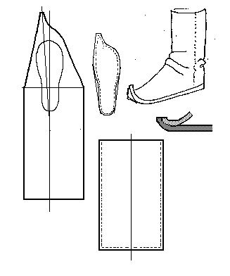

Apache Boot
This is NOT a Mongol Boot. It looks like the Mongol boot and I wanted to emphasise the differences. This design is based on Apache boot pattern found in
White (p.44)
To assemble:
- Note, that as with most pointed toed shoed, the point runs before the larger toe, as opposed to along the centerline of the foot.
- The toe extra length should be 20-25% the true length of the foot.
- The Sole should be cut with an additional 3/4" at the heel, and an additional 1/2" to the front and sides, ot give a bit of a seam allowance around the circumference.
- Sew the ankle seams, at least at the bottom, for several inches. The side seams appear to be either an edge/edge butted seam, or a flesh/flesh edge seam.

- Sew the rear section of the boot in place at the heel seam until the ankle seams are reached.
- Starting with the toe, begin to sew towards the heel. The end of the boot's toe must point upwards. This is does by using a 1/8" stich on the upper and a 1/4" stich on the sole piece until the remaining unstitched upper seam and sole seam are the same length.
- Finish the side seams.
- A lace (35-40 cm long x .25 cm) is attached to each side at the ankle.
- For added decoration, a 2"-3" welt strip can be inserted into the vertical seams and fringe cut, or a fringed top might be added.
Return to
[Index]
Footwear of the Middle Ages - Historical Shoe Designs/Number 47, by I. Marc Carlson. Copyright 1996
This page is given for the free exchange of information, provided the Author's Name is included in all future revisions, and no money change hands, other than as expressed in the Copyright Page.